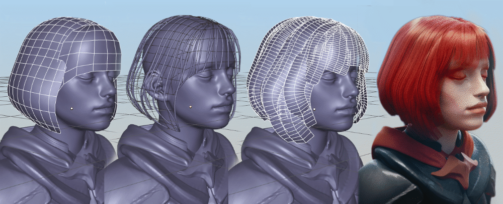

Hair Tool¶
Hair Tool addon was developed to simplify creation process of low/medium poly hair models for games.
This addon will help you generate hair mesh ribbons with uv's from bezier/nurbs curves. It is how most current games are doing hairs for characters.

Video Tutorials¶
Video tutorial mostly about generating curves from mesh surface, with some tips and tricks, problem solving and stuff.
Video showing: creating particle hair from grease pencil, generating curve ribbons from parent particle hair with children, resampling curve ribbons and other stuff.
Videos showing interactive hair ribbons combing :First, Second (includes new curve clumping)
Video showing material material setup on curve ribbons, and new modeling tool for curve ribbons- 'Linear deformer' - tool can be found on github here.
Old Video about hair shader: https://vimeo.com/229043427
Old Video about creating texture: https://vimeo.com/228873075
Link to discord server where you can report bugs.
Features:¶
- ability to generate and interactively comb hair ribbons based on blender particle hairs (since 1.8 version)
- generating hair ribbons from guide mesh surface
- ability to uv unwrap and preview textures on hair curve ribbons
- easy and convenient switching back and forth between curve ribbons and mesh mesh, while preserving uv's
- ability to adjust ribbons radius profile over strand length to taper the ribbons shape
- ability to convert stuff eg: Grease Pencil strokes to Particle Hair or Curves ribbons, Curves to Particle Hair, Particle Hair to curve ribbons
- generating randomized ribbons UV's (you can draw multiple uv boxes, that will be randomly picked for each ribbon strand).
- Curve Resampling - increase, decrease curve/ribbon points amount, while preserving it's tilt and radius.
- Generating vertex color/weights gradients for ribbons.
- And More!